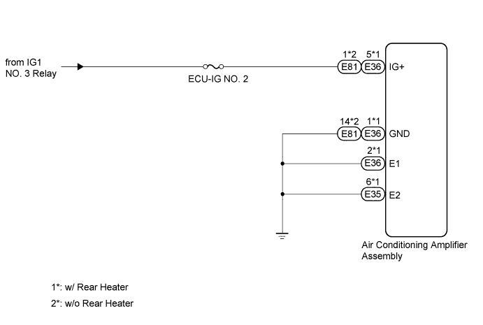
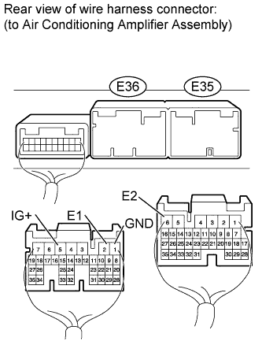
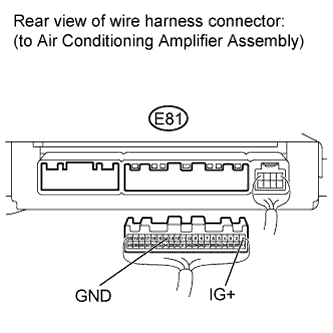

AIR CONDITIONING SYSTEM > IG Power Source Circuit |

| 1.INSPECT FUSE (ECU-IG NO. 2) |
Remove the ECU-IG NO. 2 fuse from the cowl side junction block LH.
Measure the resistance according to the value(s) in the table below.
| Tester Connection | Condition | Specified Condition |
| ECU-IG NO. 2 fuse | Always | Below 1 Ω |
|
| ||||
| OK | |
| 2.CHECK HARNESS AND CONNECTOR (AIR CONDITIONING AMPLIFIER - BATTERY AND BODY GROUND) |
 |
w/ Rear Heater
Disconnect the E35 and E36 amplifier connectors.
Measure the voltage according to the value(s) in the table below.
| Tester Connection | Switch Condition | Specified Condition |
| E36-5 (IG+) - Body ground | Engine switch off | Below 1 V |
| Engine switch on (IG) | 11 to 14 V |
Measure the resistance according to the value(s) in the table below.
| Tester Connection | Condition | Specified Condition |
| E36-1 (GND) - Body ground | Always | Below 1 Ω |
| E36-2 (E1) - Body ground | ||
| E35-6 (E2) - Body ground |
 |
w/o Rear Heater
Disconnect the E81 amplifier connector.
Measure the voltage according to the value(s) in the table below.
| Tester Connection | Switch Condition | Specified Condition |
| E81-1 (IG+) - Body ground | Engine switch off | Below 1 V |
| Engine switch on (IG) | 11 to 14 V |
Measure the resistance according to the value(s) in the table below.
| Tester Connection | Condition | Specified Condition |
| E81-14 (GND) - Body ground | Always | Below 1 Ω |
|
| ||||
| OK | ||
| ||